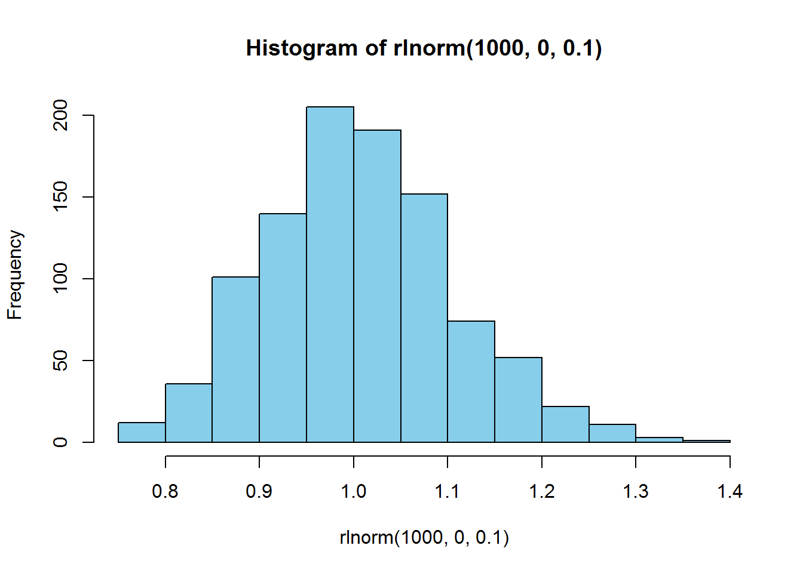
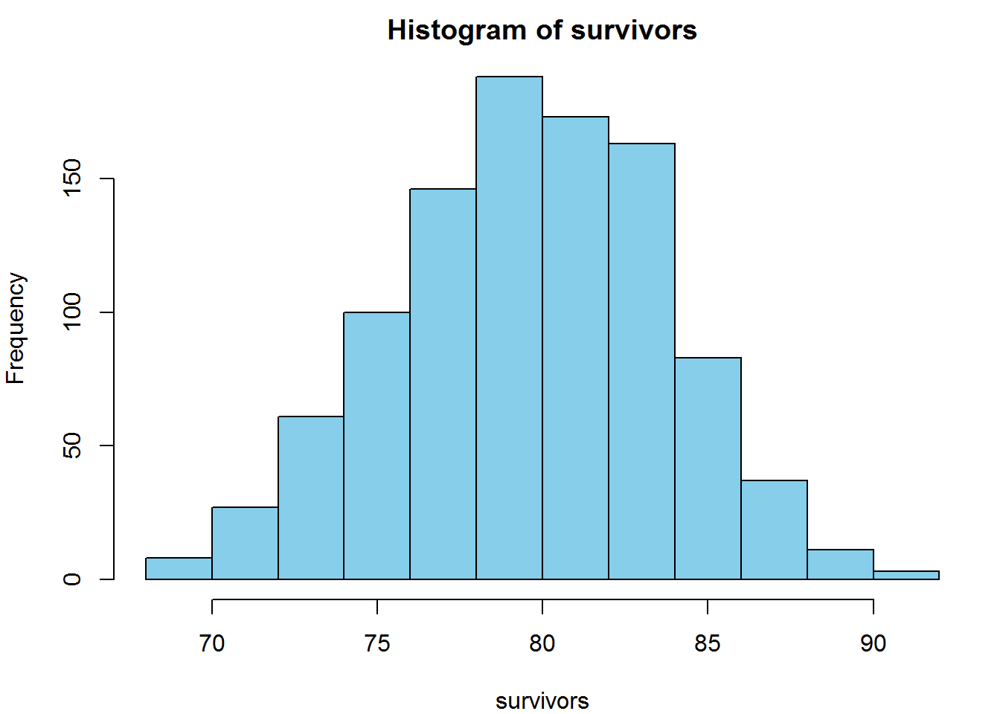
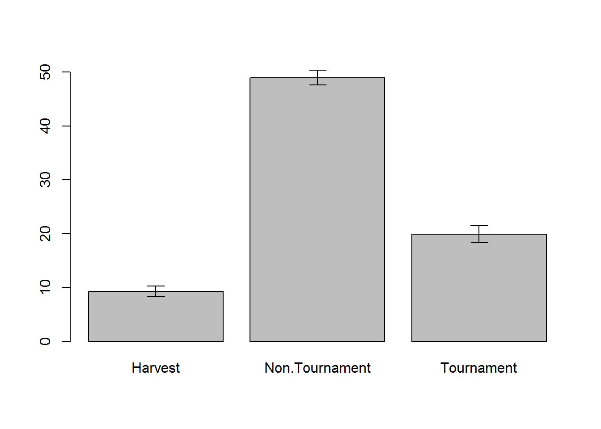
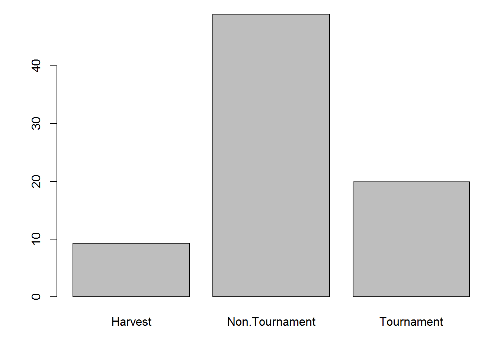
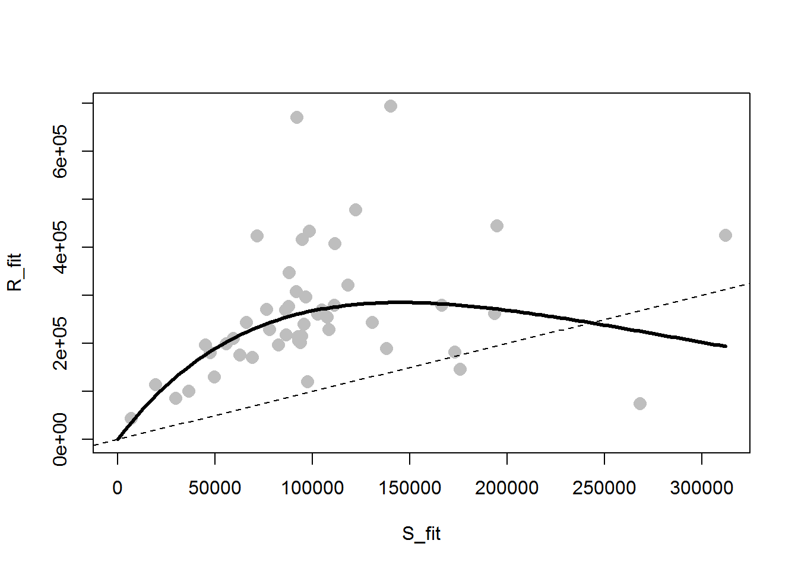
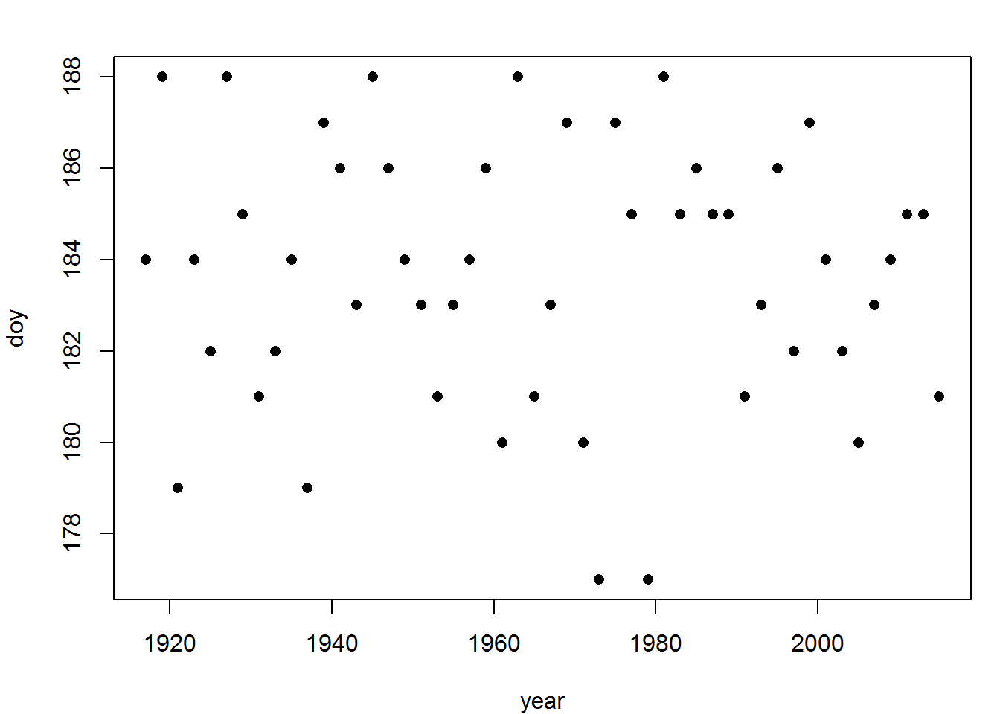
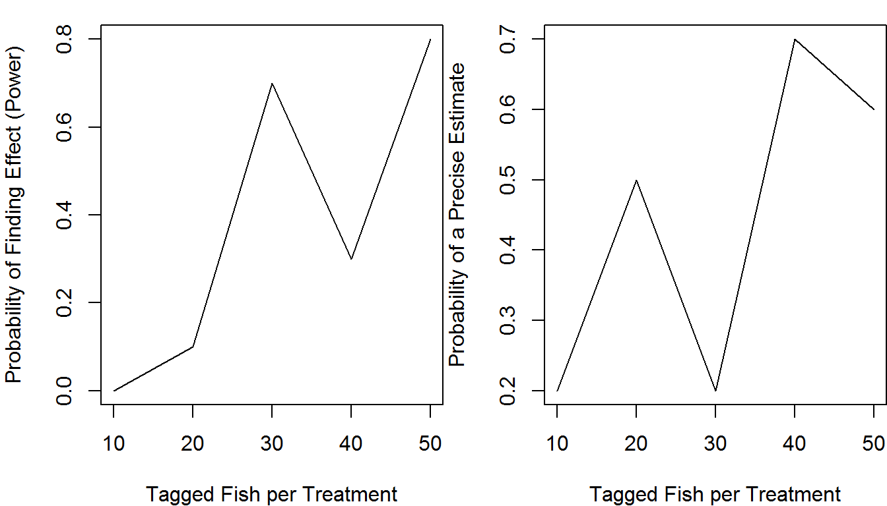
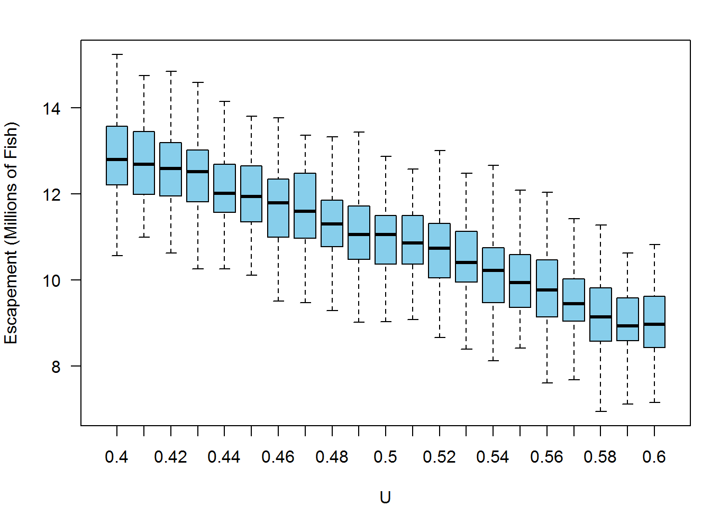
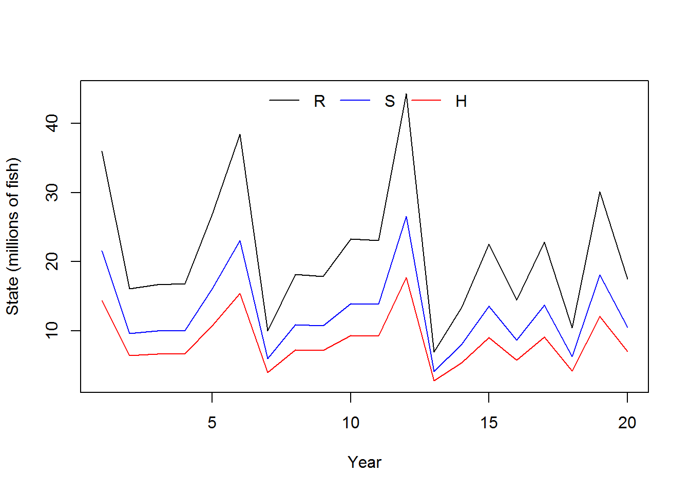

Chapter 4 Monte Carlo Methods
Chapter Overview
Simulation modeling is one of the primary reasons to move away from spreadsheet-type programs (like Microsoft Excel) and into a program like R. R allows you to replicate the same (possibly complex and detailed) calculations over and over with different random values. You can then summarize and plot the results of these replicated calculations all within the same program. Analyses of this type are Monte Carlo methods: they randomly sample from a set of quantities for the purpose of generating and summarizing a distribution of some statistic related to the sampled quantities. If this concept is confusing, hopefully this chapter will clarify.
In this chapter, you will learn the basic skills needed for simulation (i.e., Monte Carlo) modeling in R including:
- introduce randomness to a model
- repeat calculations many times
- summarization of many values from a distribution
- more advanced function writing
IMPORTANT NOTE: If you did not attend the sessions corresponding to Chapters 1 or 2 or 3, you are recommended to walk through the material found in those chapters before proceeding to this material. Remember that if you are confused about a topic, you can use CTRL + F to find previous cases where that topic has been discussed in this book.
Before You Begin
You should create a new directory and R script for your work in this Chapter. Create a new R script called Ch4.R and save it in the directory C:/Users/YOU/Documents/R-Book/Chapter4. Set your working directory to that location. Revisit the material in Sections 1.2 and 1.3 for more details on these steps.
Layout of This Chapter
This chapter is divided into two main sections:
Required Material (Sections 4.1 - 4.5) which is necessary to understand the examples in this chapter and the subsequent chapters
Example Cases (Sections 4.6 and 4.7) which apply the skills learned in the required material. In the workshop session, you will walkthrough 2-3 of these example cases at the choice of the group of the participants. If you are interested in simulation modeling, you are suggested to work through all of the example cases, as slightly different tricks will be shown in the different examples.
4.1 Introducing Randomness
A critical part of simulation modeling is the use of random processes. A random process is one that generates a different outcome according to some rules each time it is executed. They are tightly linked to the concept of uncertainty: you are unsure about the outcome the next time the process is executed. There are two basic ways to introduce randomness in R: random deviates and resampling.
4.1.1 Random deviates
In Section 3.3, you learned about using probability distributions in R. One of the uses was the r- family of distribution functions. These functions create random numbers following a random process specified by a probability distribution.
Consider animal survival as an example. At the end of each year, each individual alive at the start can either live or die. There are two outcomes here, and suppose each animal has an 80% chance of surviving. The number of individuals that survive is the result of a binomial random process in which there were \(n\) individuals alive at the start of this year and \(p\) is the probability that any one individual survives to the next year. You can execute one binomial random process where \(p = 0.8\) and \(n = 100\) like this:
rbinom(n = 1, size = 100, prob = 0.8)## [1] 79The result you get will almost certainly be different from the one printed here. That is the random component.
You can execute many such binomial processes by changing the n argument. Plot the distribution of expected surviving individuals:
survivors = rbinom(1000, 100, 0.8)
hist(survivors, col = "skyblue")
Another random process is the lognormal process: it generates random numbers such that the log of the values are normally-distributed with mean equal to logmean and standard deviation equal to logsd:
hist(rlnorm(1000, 0, 0.1), col = "skyblue")
There are many random processes you can use in R. Checkout Table ?? for more examples as well as the help files for each individual function for more details.
4.1.2 Resampling
Using random deviates works great for creating new random numbers, but what if you already have a set of numbers that you wish to introduce randomness to? For this, you can use resampling techniques. In R, the sample() function is used to sample size elements from the vector x:
sample(x = 1:10, size = 5)## [1] 5 2 6 3 10You can sample with replacement (where it is possible to sample the same element two or more times):
sample(x = c("a", "b", "c"), size = 10, replace = T)## [1] "c" "a" "a" "c" "b" "a" "b" "a" "a" "a"You can set probabilities on the sampling of different elements1:
sample(x = c("live", "die"), size = 10, replace = T,
prob = c(0.8, 0.2))## [1] "live" "live" "live" "die" "live" "live" "die" "live" "die" "live"Notice that this is the same as the binomial random process above, but with only 10 trials and the printing of the outcomes rather than the number of successes.
4.2 Reproducing Randomness
For reproducibility purposes, you may wish to get the same exact random numbers each time you run your script. To do this, you need to set the random seed, which is the starting point of the random number generator your computer uses. If you run these two lines of code, you should get the same result as printed here:
set.seed(1234)
rnorm(1)## [1] -1.2070664.3 Replication
To use Monte Carlo methods, you need to be able to replicate some random process many times. There are two main ways this is commonly done: either withreplicate() or with for() loops.
4.3.1 replicate()
The replicate() function executes some expression many times and returns the output from each execution. Say we have a vector x, which represents 30 observations of fish length (mm):
x = rnorm(30, 500, 30)We wish to build the sampling distribution of the mean length “by hand”. We can sample randomly from it, calculate the mean, then repeat this process many times:
means = replicate(n = 1000, expr = {
x_i = sample(x, length(x), replace = T)
mean(x_i)
})If we take mean(means) and sd(means), that should be very similar to mean(x) and se(x). Create the se() function (also shown in Section 2.11) and prove this to yourself:
se = function(x) sd(x)/sqrt(length(x))
mean(means); mean(x)## [1] 493.8096## [1] 493.4166sd(means); se(x)## [1] 4.899929## [1] 5.0441534.3.2 The for() loop
In programming, a loop is a command that does something over and over until it reaches some point that you specify. R has a few types of loops: repeat(), while(), and for(), to name a few. for() loops are among the most common in simulation modeling. A for() loop repeats some action for however many times you tell it for each value in some vector. The syntax is:
for (var in seq) {
expression(var)
}The loop calculates the expression for values of var for each element in the vector seq. For example:
for (i in 1:5) {
print(i^2)
}## [1] 1
## [1] 4
## [1] 9
## [1] 16
## [1] 25The print() command will be executed 5 times: once for each value of i. It is the same as:
i = 1; print(i^2); i = 2; print(i^2); i = 3; print(i^2); i = 4; print(i^2); i = 5; print(i^2)If you remove the print() function, see what happens:
for (i in 1:5) {
i^2
}Nothing is printed to the console. R did the calculation, but did not show you or store the result Often, you’ll need to store the results of the calculation in a container object:
results = numeric(5)This makes an empty numeric vector of length 5 that are all 0’s. You can store the output of your loop calculations in results:
for (i in 1:5) {
results[i]=i^2
}
results## [1] 1 4 9 16 25When i^2 is calculated, it will be placed in the element results[i]. This was a trivial example, because you should do things like this using R’s vectorized calculation framework: (1:5)^2 (see Section 1.6).
However, there are times where it is advantageous to use a loop. Particularly in cases where:
- the calculations in one element are determined from the value in previous elements, such as in time series models
- the calculations have multiple steps
- you wish to store multiple results
- you wish to track the progress of your calculations
As an illustration for item (1) above, build a (very) basic population model. At the start of the first year, the population abundance is 1000 individuals and grows by an average factor of 1.1 per year (reproduction and death processes result in a growth rate of 10%) before harvest. The growth rate varies randomly, however. Each year, the 1.1 growth factor has variability introduced by small changes in survival and reproductive process. Model these variations as lognormal random variables. After production, 8% of the population is harvested. Simulate and plot the abundance at the end of the year for 100 years:
nt = 100 # number of years
N = NULL # container for abundance
N[1] = 1000 # first end-of-year abundance
for (t in 2:nt) {
# N this year is N last year * growth *
# randomness * fraction that survive harvest
N[t] = (N[t-1] * 1.1 * rlnorm(1, 0, 0.1)) * (1 - 0.08)
}
# plot
plot(N, type = "l", pch = 15, xlab = "Year", ylab = "Abundance")
Examples of the other three utilities are shown in the example cases.
4.4 Function Writing
In Monte Carlo analyses, it is often useful to wrap code into functions. This makes them easy to be replicated and have the settings adjusted. As an example, turn the population model shown above into a function:
pop_sim = function(nt, grow, sd_grow, U, plot = F) {
N = NULL
N[1] = 1000
for (t in 2:nt) {
N[t] = (N[t-1] * grow * rlnorm(1, 0, sd_grow)) * (1 - U)
}
if (plot) {
plot(N, type = "l", pch = 15, xlab = "Year", ylab = "Abundance")
}
N
}This function takes five inputs:
nt: the number of years,grow: the population growth rate,sd_grow: the amount of annual variability in the growth rateU: the annual exploitation rateplot: whether you wish to have a plot created. It has a default setting ofFALSE: if you don’t specifyplot = Twhen you callpop_sim(), you won’t see a plot made.
It returns one output: the vector of population abundance.
Use your function once using the same settings as before:
pop_sim(100, 1.1, 0.1, 0.08, T)
Now, you wish to replicate executing this function 1000 times. Use the replicate() function to do this:
out = replicate(n = 1000, expr = pop_sim(100, 1.1, 0.1, 0.08, F))If you do dim(out), you’ll see that rows are stored as years (there are 100 of them) and columns are stored as replicates (there are 1000 of them). Notice how wrapping the code in the function made the replicate() call easy.
Here are some advantages of wrapping code like this into a function:
- If you do the same task over and over, you don’t need to type all of the code to perform the task, just the function call.
- If you need to change the way the function behaves (i.e., the function body), you only need to change it one place: in the function definition.
- You can easily change the settings of the code (e.g., whether you want to see the plot) in one place
- Function writing can lead to shorter scripts
- Function writing can lead to more readable code (if people know what your functions do)
4.5 Summarization
After replicating a calculation many times, you will need to summarize the results. Here are several examples using the out matrix from Section 4.4.
4.5.1 Central Tendency
You can calculate the mean abundance each year across your iterations using the apply() function (Section 1.9):
N_mean = apply(out, 1, mean)
N_mean[1:10]## [1] 1000.000 1017.511 1033.436 1054.619 1069.542 1086.413 1107.854
## [8] 1129.619 1145.288 1161.254You could do the same thing using median rather than mean. The mode is more difficult to calculate in R, if you need to get the mode, try to Google it2.
4.5.2 Variability
One of the primary reasons to conduct a Monte Carlo analysis is to obtain estimates of variability. You can summarize the variability easily using the quantile() function:
# obtain the 10% and 90% quantiles each year across iterations
N_quants = apply(out, 1, function(x) quantile(x, c(0.1, 0.9)))
# plot them as a time series with the mean
plot(N_mean, type = "l", ylim = c(0, 10000))
lines(N_quants[1,], lty = 2)
lines(N_quants[2,], lty = 2)
Notice how a user-defined function was passed to apply(). The range within the two dashed lines represents the range that encompassed the central 80% of the random abundances each year.
4.5.3 Frequencies
Often you will want to count how many times something happened. In some cases, the fraction of times something happened can be interpreted as a probability.
The table() function is very useful for counting occurrences of discrete events. Suppose you are interested in how many of your iterations resulted in fewer than 1000 individuals at year 10:
out10 = ifelse(out[10,] < 1000, "less10", "greater10")
table(out10)## out10
## greater10 less10
## 643 357Suppose you are also interested in how many of your iterations resulted in fewer than 1100 individuals at year 20:
out20 = ifelse(out[20,] < 1100, "less20", "greater20")
table(out20)## out20
## greater20 less20
## 592 408Now suppose you are interested in how these two metrics are related:
table(out10, out20)## out20
## out10 greater20 less20
## greater10 502 141
## less10 90 267As an example in interpreting this output, most often populations that were greater than 1000 at year 10 were also greater than 1100 at year 20. If a population was less than 1000 at year 10, it was more likely to be less than 1100 at year 20 than to be greater than it.
You can turn these into probabilities (if you believe your model represents reality) by dividing each cell by the total number of iterations:
round(table(out10, out20)/1000, 2)## out20
## out10 greater20 less20
## greater10 0.50 0.14
## less10 0.09 0.274.6 Simulation-Based Examples
4.6.1 Test rnorm
In this example, you will verify that the function rnorm() works the same way that qnorm() and pnorm() indicate that it should work. That is, you will verify that random deviates generated using rnorm() have the same properties as the true normal distribution given by qnorm() and pnorm(). Hopefully it will also reinforce the way the random, quantile, and cumulative distribution functions work in R.
First, specify the mean and standard deviation for this example:
mu = 500; sig = 30Now make up n (any number of your choosing, something greater than 10) random deviates from this normal distribution:
random = rnorm(100, mu, sig)Test the quantiles (obtain the values that p * 100% of the quantities fall below, both for random numbers and from the qnorm() function):
p = seq(0.01, 0.99, 0.01)
random_q = quantile(random, p)
normal_q = qnorm(p, mu, sig)
plot(normal_q ~ random_q); abline(c(0,1))
The fact that all the quantiles fall around the 1:1 line suggests the n random samples samples are indeed from a normal distribution. Any deviations you see are due to sampling errors. If you increase n to n = 1e6 (one million), you’ll see no deviations. This is called a q-q plot, and is frequently used to assess the fit of data to a distribution.
Now test the random values in their agreement with the pnorm() function. Plot the cumulative density functions for the truly normal curve and that approximated by the random deviates:
q = seq(400, 600, 10)
random_cdf = ecdf(random)
random_p = random_cdf(q)
normal_p = pnorm(q, mu, sig)
plot(normal_p ~ q, type = "l", col = "blue")
points(random_p ~ q, col = "red")
The ecdf() function obtains the empirical cumulative density function (which is just pnorm() for a sample). It allows you to plug in any random variable and obtain the probability of having one less than it.
4.6.2 Stochastic Power Analysis
A power analysis is one where the analyst wishes to determine how much power they will have to detect an effect. Having high power means ensuring you do not falsely reject a true hypothesis (e.g., claiming that there is no effect based on a p-value greater than 0.05 when there truly is an effect).
You can conduct a power analysis using stochastic simulation (i.e., a Monte Carlo analysis). Here, you will write a power analysis to determine how likely are you to be able to correctly identify what you deem to be a biologically-meaningful difference in survival between two tagging procedures. You know one tagging procedure has approximately a 10% mortality rate (10% of tagged fish die within the first 12 hours as result of the tagging process). Another, cheaper and less labor-intensive method has been proposed but before implementing it, your agency wishes to determine if it will have a meaningful impact on the reliability of the study or the efficiency of the tagging crew to tag individuals that will be alive long enough to be useful. You and your colleagues determine that if the mortality rate of the new tagging method reaches 25%, then gains in time and cost efficiency would be offset by needing to tag more fish (because more will die). You have decided to perform a small-scale study to determine if the new method affects mortality enough to result in 25% or more mortality. The study will tag n individuals using each method (new and old) and track the fraction that survived after 12 hours. Before performing the study however, you deem it important to determine how large n needs to be to answer this question. You decide to use a stochastic power analysis based on what you’ve learned in this book to help your research group. The small-scale study can tag a total of at most 100 fish with the currently available resources. Could you tag fewer than 100 total individuals and still have a high probability of correctly identifying an effect of this size?
The stochastic power analysis approach works like this (this is called psuedocode):
- Simulate data under the reality that the difference is real with
nobservations per treatment, wheren < 100/2 - Fit the model that will be used when the real data are collected to the simulated data
- Determine if the effect was detected with a significant p-value
- Replicate steps 1 - 3 many times
- Replicate step 4 while varying
nover the interval from 10 to 50 - Determine what fraction of the p-values were deemed significant at each
n
Step 2 will require fitting a generalized linear model, for a review revisit Section 3.2 (specifically Section 3.2.1 on logistic regression).
First, create a function that will generate data, fit the model, and determine if the p-value is significant (steps 1-3 above):
sim_fit = function(n, p_old = 0.10, p_new = 0.25) {
### step 1: create the data ###
# generate random response data
dead_old = rbinom(n, size = 1, prob = p_old)
dead_new = rbinom(n, size = 1, prob = p_new)
# create the predictor variable
method = rep(c("old", "new"), each = n)
# create a data.frame to pass to glm
df = data.frame(dead = c(dead_old, dead_new), method = method)
# relevel so old is the reference
df$method = relevel(df$method, ref = "old")
### step 2: fit the model ###
fit = glm(dead ~ method, data = df, family = binomial)
### step 3: determine if a sig. p-value was found ###
# extract the p-value
pval = summary(fit)$coef[2,4]
# determine if it was found to be significant
pval < 0.05
}Next, for steps 4 and 5, set up a nested for loop. This will have two loops: one that loops over sample sizes for step 5 and one that loops over replicates of each sample size (step 4). First, create the looping objects and containers:
I = 500 # the number of replicates at each sample size
n_try = seq(10, 50, 10) # the test sample sizes
N = length(n_try) # count them
# container:
out = matrix(NA, I, N) # matrix with I rows and N columnsNow perform the nested loop. The inner-loop over iterations will be completed form each element of n for the sequence 1:N. The output (which is one element: TRUE or FALSE based on the significance of the p-value) is stored in the corresponding row and column for that iteration of that sample size.
for (n in 1:N) {
for (i in 1:I) {
out[i,n] = sim_fit(n = n_try[n])
}
}You now have a matrix of TRUE and FALSE elements that indicates whether a significant difference was found at the \(\alpha = 0.05\) level if the effect was truly as large as you care about. You can obtain the proportion of all the replicates at each sample size that resulted in a significant difference using the mean() function with apply():
plot(apply(out, 2, mean) ~ n_try, type = "l",
xlab = "Tagged Fish per Treatment",
ylab = "Probability of Finding Effect (Power)")
Even if you tagged 100 fish total, you would only have a 50% chance of saying the effect (which truly is there!) is present under the null hypothesis testing framework.
Suppose you and your colleagues aren’t relying on p-values in this case, and are purely interested in how precisely the effect size would be estimated. Adapt your function to determine how frequently it is you would be able to estimate the true mortality probability of the new method within +/- 5% based on the point estimate only (the estimate for the tagging mortality of the new method must be between 0.2 and 0.3 for a successful study). Change your function to calculate this additional metric and re-run the analysis:
sim_fit = function(n, p_old = 0.10, p_new = 0.25) {
# create the data
dead_old = rbinom(n, size = 1, prob = p_old)
dead_new = rbinom(n, size = 1, prob = p_new)
# create the predictor variable
method = rep(c("old", "new"), each = n)
# create a data.frame to pass to glm
df = data.frame(dead = c(dead_old, dead_new), method = method)
# relevel so old is the reference
df$method = relevel(df$method, ref = "old")
# fit the model
fit = glm(dead ~ method, data = df, family = binomial)
# extract the p-value
pval = summary(fit)$coef[2,4]
# determine if it was found to be significant
sig_pval = pval < 0.05
# obtain the estimated mortality rate for the new method
p_new_est = predict(fit, data.frame(method = c("new")),
type = "response")
# determine if it is +/- 5% from the true value
prc_est = p_new_est >= (p_new - 0.05) & p_new_est <= (p_new + 0.05)
# return a vector with these two elements
c(sig_pval = sig_pval, prc_est = unname(prc_est))
}
# containers:
out_sig = matrix(NA, I, N) # matrix with I rows and N columns
out_prc = matrix(NA, I, N) # matrix with I rows and N columns
for (n in 1:N) {
for (i in 1:I) {
tmp = sim_fit(n = n_try[n]) # run sim
out_sig[i,n] = tmp["sig_pval"] # extract and store significance metric
out_prc[i,n] = tmp["prc_est"] # extract and store precision metric
}
}
par(mfrow = c(1,2))
plot(apply(out_sig, 2, mean) ~ n_try, type = "l",
xlab = "Tagged Fish per Treatment",
ylab = "Probability of Finding Effect (Power)")
plot(apply(out_prc, 2, mean) ~ n_try, type = "l",
xlab = "Tagged Fish per Treatment",
ylab = "Probability of A Precise Estimate")
It seems that even if you tagged 50 fish per treatment, you would have a 60% chance of estimating that the mortality rate is between 0.2 and 0.3 if it was truly 0.25.
You and your colleagues consider these results and determine that you will need to somehow acquire more funds to tag more fish in the small-scale study in order to a high level of confidence in the results.
4.6.3 Harvest Policy Analysis
In this example, you will simulate population dynamics under a more realistic model than in Sections 4.3.2 and 4.4 for the purpose of evaluating different harvest policies.
Suppose you are a fisheries research biologist, and a commercial fishery for pink salmon (Oncorhynchus gorbuscha) takes place in your district. For the past 10 years, it has been fished with an exploitation rate of 40% (40% of the fish that return each year have been harvested, exploitation rate is abbreviated by \(U\)), resulting in an average annual harvest of 8.5 million fish. The management plan is up for evaluation this year, and your supervisor has asked you to prepare an analysis that determines if more harvest could be sustained if a different exploitation rate were to be used in the future.
Based on historical data, your best understanding implies that the stock is driven by Ricker spawner-recruit dynamics. That is, the total number of fish that return this year (recruits) are a function of the total number of spawners that produced and fertilized the eggs from which this year’s recruits were produced. The Ricker model can be written this way:
\[\begin{equation} R_t = \alpha S_{t-1} e^{-\beta S_{t-1} + \varepsilon_t} ,\varepsilon_t \sim N(0,\sigma) \tag{4.1} \end{equation}\]where \(\alpha\) is a parameter representing the maximum recruits per spawner (obtained at very low spawner abundances) and \(\beta\) is a measure of the strength of density-dependent mortality. Notice that the error term is in the exponent, which makes \(e^{\varepsilon_t}\) lognormal.
You have estimates of the parameters3:
- \(\alpha = 6\)
- \(\beta = 1 \times 10^{-7}\)
- \(\sigma = 0.4\)
You decide that you can build a policy analysis by simulating the stock forward through time under different exploitation rates to determine if its reasonable to expect a different exploitation rate to provide more harvest than what is currently being extracted.
First, write a function for your population model. Your function must:
- take the parameters, dimensions (number of years), and the policy variable (\(U\)) as input arguments
- simulate the population using Ricker dynamics
- calculate and return the average harvest and escapement over the number future years you simulated.
# Step #1: name function and give it some arguments
ricker_sim = function(ny, params, U) {
# extract the parameters out by name:
alpha = params["alpha"]
beta = params["beta"]
sigma = params["sigma"]
# create containers:
# yep, you can do this
R = S = H = NULL
# initialize the population in the first year
# start the population at being fished at 40%
# with lognormal error
R[1] = log(alpha * (1 - 0.4))/(beta * (1 - 0.4)) * exp(rnorm(1, 0, sigma))
S[1] = R[1] * (1 - U)
H[1] = R[1] * U
# carry simulation forward through time
for (y in 2:ny) {
# use the ricker function with random lognormal white noise
R[y] = S[y-1] * alpha * exp(-beta * S[y-1] + rnorm(1, 0, sigma))
#harvest and spawners are the same as before
S[y] = R[y] * (1 - U)
H[y] = R[y] * U
}
# wrap output in a list object
list(
mean_H = mean(H),
mean_S = mean(S)
)
}Use the function once:
params = c(alpha = 6, beta = 1e-7, sigma = 0.4)
out = ricker_sim(U = 0.4, ny = 20, params = params)
#average annual harvest (in millions)
round(out$mean_H/1e6, digits = 2)## [1] 9.02If you completed the stochastic power analysis example (Section 4.6.2), you might see where this is going. You are going to replicate applying a fixed policy many times to a random system. This is the Monte Carlo part of the analysis. The policy part is that you will compare the output from several candidate exploitation rates to inform a decision about which is best. This time, set up your analysis using sapply() (to iterate over different values of \(U\)) and replicate() (to iterate over different random populations fished at each \(U\)) instead of performing a nested for() loop as in previous examples:
U_try = seq(0.4, 0.6, 0.01)
n_rep = 500
H_out = sapply(U_try, function(u) {
replicate(n = n_rep, expr = {
ricker_sim(U = u, ny = 20, params = params)$mean_H/1e6
})
})The nested replicate() and sapply() method is a bit cleaner than a nested for() loop, but you have less control over the format of the output.
Plot the output of your simulations using a boxplot. To make things easier, give H_out column names representing the exploitation rate:
colnames(H_out) = U_try
boxplot(H_out, outline = F,
xlab = "U", ylab = "Harvest (Millions of Fish)",
col = "tomato", las = 1)
It appears the stock could produce more harvest than its current 8.5 million fish per year if it was fished harder. However, your supervisors also do not want to see the escapement drop below three-quarters of what it has been in recent history (75% of approximately 13 million fish). They ask you to obtain the expected average annual escapement as well as harvest. You can simply re-run the code above, but extracting S_mean rather than H_mean. Call this output S_out and plot it just like harvest (if you’re curious, this blue color is col = "skyblue"):

After seeing this information, your supervisor realizes they are faced with a trade-off: the stock could produce more with high exploitation rates, but they are concerned about pushing the stock too low for sustainability reasons. They tell you to determine the probability the average escapement would not be pushed below 75% of 13 million at each exploitation rate, as well as the probability that the average annual harvests will be at least 20% greater than they are currently (approximately 8.5 million fish). Given your output, this is easy:
# determine if each element meets escapement criterion
Smeet = S_out > (0.75 * 13)
# determine if each element meets harvest criterion
Hmeet = H_out > (1.2 * 8.5)
# calculate the probability of each occuring at a given exploitation rate
# remember, mean of a logical vector calculate the proportion of TRUEs
p_Smeet = apply(Smeet, 2, mean)
p_Hmeet = apply(Hmeet, 2, mean)You plot this for your supervisor as follows:
# the U levels to highlight on plot
plot_U = seq(0.4, 0.6, 0.05)
# create an empty plot
par(mar = c(4,5,1,1))
plot(p_Smeet ~ p_Hmeet, type = "n",
xlab = "Probability of Meeting Harvest Criterion",
ylab = "Probability of Meeting Escapement Criterion")
# add gridlines
abline(v = seq(0, 1, 0.1), col = "grey")
abline(h = seq(0, 1, 0.1), col = "grey")
#draw on the tradeoff curve
lines(p_Smeet ~ p_Hmeet, type = "l", lwd = 2)
# add points and text for particular U policies
points(p_Smeet[U_try %in% plot_U] ~ p_Hmeet[U_try %in% plot_U],
pch = 16, cex = 1.5)
text(p_Smeet[U_try %in% plot_U] ~ p_Hmeet[U_try %in% plot_U],
labels = U_try[U_try %in% plot_U], pos = c(1,1,1,2,2))
Equipped with this analysis, your supervisor plans to go to the policy-makers with the recommendation of adjusting the exploitation rate policy to use \(U = 0.5\), because they think it balances the trade-off. Notice how if the status quo was maintained, your model suggests you would have complete certainty of staying where you are now: escapement will remain above 75% of its current level with a 100% chance, but you would have no chance of improving harvests to greater than 20% of their current level. Small increases in the exploitation rate (e.g., from 0.4 to 0.45) have a reasonably large gain in harvest performance, but hardly any losses for the escapement criterion. Your supervisor is willing to live with a 90% chance that the escapement will stay where they desire in order to gain a >80% chance of obtaining the desired amount of increases in harvest.
The utility of using Monte Carlo methods in this example is the ability to calculate the probability of some event you are interested in. There are analytical (i.e., not simulation-based) solutions to predict the annual harvest and escapement from a fixed \(U\) from a population with parameters \(\alpha\) and \(\beta\), but by incorporating randomness, you were able to obtain the relative weights of outcomes other than the expectation under the deterministic Ricker model, thereby allowing the assignment of probabilities to meeting the two criteria.
4.7 Resampling-Based Examples
4.7.1 The Bootstrap
Oftentimes, you’ll have a fitted model that you wish to propagate the uncertainty from to some derived quantity. Consider the case of the von Bertalanffy growth model. This is a non-linear model used to predict the size of an organism (weight or length) based on its age. The model can be written for a non-linear regression model (see Section 3.4) as:
\[\begin{equation} L_i = L_{\infty}\left(1 - e^{-k(age_i-t_0)}\right) + \varepsilon_i, \varepsilon_i \sim N(0, \sigma) \tag{4.2} \end{equation}\]where \(L_i\) and \(age_i\) are the observed length and age of individual \(i\), respectively, and \(L_{\infty}\), \(k\), and \(t_0\) are parameters to be estimated. The interpretations of the parameters are as follows:
- \(L_{\infty}\): the maximum average length achieved
- \(k\): a growth coefficient linked to metabolic rate. It specifies the rate of increase in length as the fish ages early in life
- \(t_0\): the theoretical age when length equals zero (the x-intercept).
Use the data set growth.csv for this example (see the instructions on acquiring data files). Read in and plot the data:
dat = read.csv("../Data/growth.csv")
plot(length ~ age, data = dat, pch = 16, col = "grey")
Due to a large amount of variability in individual growth rates, the relationship looks pretty noisy. Notice how you have mostly young fish in your sample: this is characteristic of “random” sampling of fish populations.
Suppose you would like to obtain the probability that an average-sized fish of each age is sexually mature. You know that fish of this species mature at approximately 450 mm, and you simply need to determine the fraction of all fish at each age are greater than 450 mm. However, you don’t have any observations for some ages (e.g., age 8), so you cannot simply calculate this fraction based on your raw data. You need to fit the von Bertalanffy growth model, then carry the statistical uncertainty from the fitted model forward to the predicted length-at-age. This would be difficult to obtain using only the coefficient estimates and their standard errors, because of the non-linear relationship between the \(x\) and \(y\) variables.
Enter the bootstrap, which is a Monte Carlo analysis using an observed data set and a model. The pseudocode for a bootstrap analysis is:
- Resample from the original data (with replacement)
- Fit a model of interest
- Derive some quantity of interest from the fitted model
- Repeat steps 1 - 3 many times
- Summarize the randomized quantities from step 4
In this example, you will apply a bootstrap approach to obtain the distribution of expected fish lengths at each age, then use these distributions to quantify the probability that an averaged-sized fish of each age is mature (i.e., greater than 450 mm).
You will write a function for each of steps 1 - 3 above. The first is to resample the data:
randomize = function(dat) {
# number of observed pairs
n = nrow(dat)
# sample the rows to determine which will be kept
keep = sample(x = 1:n, size = n, replace = T)
# retreive these rows from the data
dat[keep,]
}Notice the use of replace = T here: without this, there would be no bootstrap. You would just sample the same observations over and over, their order in the rows would just be shuffled. Next, write a function to fit the model (revisit Section 3.4 for more details on nls()):
fit_vonB = function(dat) {
nls(length ~ linf * (1 - exp(-k * (age - t0))),
data = dat,
start = c(linf = 600, k = 0.3, t0 = -0.2)
)
}This function will return a fitted model object when executed. Next, write a function to predict mean length-at-age:
# create a vector of ages
ages = min(dat$age):max(dat$age)
pred_vonB = function(fit) {
# extract the coefficients
ests = coef(fit)
# predict length-at-age
ests["linf"] * (1 - exp(-ests["k"] * (ages - ests["t0"])))
}Notice your function will use the object ages even though it was not defined in the function. This has to do with lexical scoping and environments, which are beyond the scope of this introductory material. If you’d like more details, see the section in Wickham (2015) on it4. Basically, if an object with the same name as one defined in the function exists outside of the function, the function will use the one that is defined within the function. If there is no object defined in the function with that name, it will look outside of the function for that object.
Now, use these three functions to perform one iteration:
pred_vonB(fit = fit_vonB(dat = randomize(dat = dat)))You can wrap this inside of a replicate() call to perform step 4 above:
set.seed(2)
out = replicate(n = 100, expr = {
pred_vonB(fit = fit_vonB(dat = randomize(dat = dat)))
})
dim(out)## [1] 10 100It appears the rows are different ages and the columns are different bootstrapped iterations. Summarize the random lengths at each age:
summ = apply(out, 1, function(x) c(mean = mean(x), quantile(x, c(0.025, 0.975))))Plot the data, the summarized ranges of mean lengths, and the length at which all fish are assumed to be mature (450 mm)
plot(length ~ age, data = dat, col = "grey", pch = 16,
ylim = c(0, max(dat$length, summ["97.5%",])),
ylab = "Length (mm)", xlab = "Age (years)")
lines(summ["mean",] ~ ages, lwd = 2)
lines(summ["2.5%",] ~ ages, col = "grey")
lines(summ["97.5%",] ~ ages, col = "grey")
abline(h = 450, col = "blue")
Obtain the fraction of iterations that resulted in the mean length-at-age being greater than 450 mm. This is interpreted as the probability that the average-sized fish of each age is mature:
p_mat = apply(out, 1, function(x) mean(x > 450))
plot(p_mat ~ ages, type = "b", pch = 17,
xlab = "Age (years)", ylab = "Probability of Average Fish Mature")
This maturity schedule can be used by fishery managers in attempting to decide which ages should be allowed to be harvested and which should be allowed to grow more5. Because each age has an associated expected length, managers can use what they know about the size selectivity of various gear types to set policies that attempt to target some ages more than others.
4.7.2 Permutation Test
In the previous example (Section 4.7.1), you learned about the bootstrap. A related Monte Carlo analysis is the permutation test. This is a non-parametric statistical test to determine if there is a statistically-significant difference in the mean of some quantity between two populations. It is used in cases where the assumptions of a generalized linear model may not be met, but a p-value is still required.
The pseudocode for the permutation test is:
- Calculate the difference between means based on the original data set
- Shuffle the group assignments randomly among the observations
- Calculate the difference between the randomly-assigned groups
- Repeat steps 2 - 3 many times. This builds the null distribution: the distribution of the test statistic (the difference) assuming the null hypothesis that there is not difference in means is true
- Determine what fraction of the absolute differences were larger than the original difference. This constitutes a two-tailed p-value. One-tailed tests can also be derived using the same steps 1 - 4, which is left as an exercise.
Use the data set ponds.csv for this example (see the instructions on acquiring data files). This is the same data set used for Exercise 1B, revisit that exercise for details on this hypothetical data set. Read in and plot the data:
dat = read.csv("ponds.csv")
plot(chl.a ~ treatment, data = dat)
It appears as though there is a relatively strong signal indicating a difference. Use the permutation test to determine if it is statistically significant. Step 1 from the pseudocode is to calculate the observed difference between groups:
Dobs = mean(dat$chl.a[dat$treatment == "Add"]) - mean(dat$chl.a[dat$treatment == "Control"])
Dobs## [1] 26.166Write a function to perform one iteration of steps 2 - 3 from the pseudocode:
# x is the group: Add or Control
# y is chl.a
perm = function(x, y) {
# turn x to a character, easier to deal with
x = as.character(x)
# shuffle the x values:
x_shuff = sample(x)
# calculate the mean of each group:
x_bar_add = mean(y[x_shuff == "Add"])
x_bar_ctl = mean(y[x_shuff == "Control"])
# calculate the difference:
x_bar_add - x_bar_ctl
}Use your function once:
perm(x = dat$treatment, y = dat$chl.a)## [1] -11.15Perform step 4 from the pseudocode by replicating your perm() function many times:
Dnull = replicate(n = 5000, expr = perm(x = dat$treatment, y = dat$chl.a))Plot the distribution of the null test statistic and draw a line where the originally-observed difference falls:
hist(Dnull, col = "grey")
abline(v = Dobs, col = "blue", lwd = 3, lty = 2)
Notice the null distribution is centered on zero: this is because the null hypothesis is that there is no difference. The observation (blue line) falls way in the upper tail of the null distribution, indicating it is unlikely an effect that large was observed by random chance. The two-tailed p-value can be calculated as:
mean(abs(Dnull) >= Dobs)## [1] 0Very few (or zero) of the random data sets resulted in a difference greater than what was observed, indicating there is statistical support to the hypothesis that there is a non-zero difference between the two nutrient treatments.
4.8 Exercise 4
In these exercises, you will be adapting the code written in this chapter to investigate slightly different questions. You should create a new R script Ex4.R in your working directory for these exercises so your chapter code is left unchanged. Exercise 4A is based solely on the required material and Exercises 4B - 4F are based on the example cases. You should work through each example before attempting each of the later exercises.
The solutions to this exercise are found at the end of this book (here). You are strongly recommended to make a good attempt at completing this exercise on your own and only look at the solutions when you are truly stumped.
Exercise 4A: Required Material Only
These questions are based on the material in Sections 4.1 - 4.5 only.
- Simulate flipping an unfair coin (probability of heads = 0.6) 100 times using
rbinom(). Count the number of heads and tails. - Simulate flipping the same unfair coin 100 times, but using
sample()instead. Determine what fraction of the flips resulted in heads. - Simulate rolling a fair 6-sided die 100 times using
sample(). Determine what fraction of the rolls resulted in an even number. - Simulate rolling the same die 100 times, but use the function
rmultinom()instead. Look at the help file for details on how to use this function. Determine what fraction of the rolls resulted in an odd number.
Exercise 4B: Test rnorm
These questions will require you to adapt the code written in Section 4.6.1
- Adapt this example to investigate another univariate probability distribution, like
-lnorm(),-pois(), or-beta(). See the help files (e.g.,?rpois) for details on how to use each function.
Exercise 4C: Stochastic Power Analysis
These questions will require you to adapt the code written in Section 4.6.2
- What sample size
ndo you need to have a power of 0.8 of detecting a significant difference between the two tagging methods? - How do the inferences from the power analysis change if you are interested in
p_new = 0.4instead ofp_new = 0.25? Do you need to tag more or fewer fish in this case? - Your analysis takes a bit of time to run so you are interested in tracking its progress. Add a progress message to your nested
for()loop that will print the sample size currently being analyzed:
for (n in 1:N) {
cat("\r", "Sample Size = ", n_try[n])
for (i in 1:I) {
...
}
}Exercise 4D: Harvest Policy Analysis
These questions will require you to adapt the code written in Section 4.6.3
- Add an argument to
ricker_sim()that will give the user an option to create a plot that shows the time series of recruitment, harvest, and escapement all on the same plot. Set the default to be to not plot the result, in case you forget to turn it off before performing the Monte Carlo analysis. - Add an error handler to
ricker_sim()that will cause the function to return an errorif()the names of the vector passed to theparamargument aren’t what the function is expecting. You can use stop(“Error Message Goes Here”) to have your function stop and return an error. - How do the results of the trade-off analysis differ if the process error was larger (a larger value of \(\sigma\))?
- Add implementation error to the harvest policy. That is, if the target exploitation rate is \(U\), make the real exploitation rate in year \(y\) be: \(U_y \sim Beta(a,b)\), where \(a = 100U\) and \(b = 100(1-U)\). You can make there be more implementation error by inserting a smaller number other than 100 here. How does this affect the trade-off analysis?
Exercise 4E: The Bootstrap
These questions will require you to adapt the code written in Section 4.7.1
- Replicate the bootstrap analysis but adapted for the linear regression example in Section 3.1.1. Stop at the step where you summarize the 95% interval range.
- Compare the 95% bootstrap confidence intervals to the intervals you get by running the
predictfunction on the original data set with the argumentinterval = "confidence"set.
Exercise 4F: Permutation Tests
These questions will require you to adapt the code written in Section 4.7.2
- Adapt the code to perform a permutation test for the difference in each of the zooplankton densities between treatments. Don’t forget to fix the missing value in the
chaovariable. See Exercise 2 for more details on this. - Adapt the code to perform a permutation test for another data set used in this book where there are observations of both a categorical variable and a continuous variable. The data sets
sockeye.csv,growth.csv, orcreel.csvshould be good starting points. - Add a calculation of the p-value for a one-tailed test (i.e., that the difference in means is greater or less than zero). Steps 1 - 4 are the same: all you need is
DnullandDobs. Don’t be afraid to Google this if you are confused.
References
Wickham, Hadley. 2015. Advanced R. 2nd ed. Boca Raton, Florida: Chapman; Hall/CRC. https://adv-r.hadley.nz/.
If
probdoesn’t sum to 1, then it will be rescaled:prob = prob/sum(prob)↩Google is an R programmer’s best friend. There is a massive online community for R, and if you have a question on something, it has almost certainly been asked somewhere on the web.↩
In reality, these estimates would have substantial uncertainty that you would need to propagate through your harvest policy analysis. In this example, you will ignore this complication↩
The section on lexical scoping is found here: http://adv-r.had.co.nz/Functions.html#lexical-scoping↩
possibly in a yield-per-recruit analysis↩